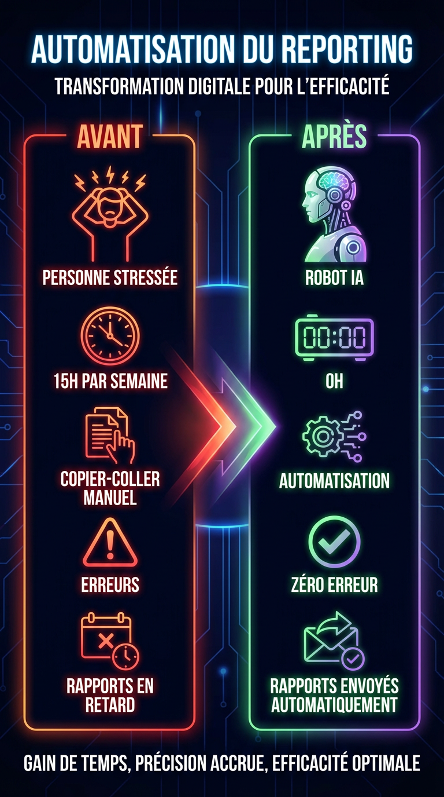

Vous passez 2 jours par mois à copier-coller des chiffres depuis Google Ads, Meta Ads et Analytics dans des slides PowerPoint ? Vos clients attendent leurs rapports et vous courez après les deadlines ? Ce guide va changer votre façon de travailler.
En automatisant vos reportings clients, vous pouvez récupérer 10 à 15 heures par semaine et offrir à vos clients des rapports plus fiables, plus fréquents et plus professionnels. Voici comment.
Pourquoi le reporting manuel est un piège
La plupart des PME et agences marketing produisent leurs rapports clients de la même façon depuis des années :
- Se connecter à chaque plateforme (Google Ads, Meta, Analytics, Search Console...)
- Exporter les données en CSV ou copier-coller les chiffres
- Compiler dans un Google Slides ou PowerPoint
- Ajouter un commentaire personnalisé
- Envoyer par email au client
Ce processus pose trois problèmes majeurs :
- C'est chronophage — 2 à 4 heures par client et par mois, minimum
- C'est source d'erreurs — un mauvais copier-coller et votre crédibilité en prend un coup
- Ça ne scale pas — avec 10 clients, vous y passez vos semaines
Avec un taux horaire de 50€, 15h/semaine de reporting manuel = 3 000€/mois de temps perdu. C'est le salaire d'un employé à temps plein... pour du copier-coller.
La solution : un workflow d'automatisation
L'idée est simple : un système qui récupère automatiquement les données, génère un rapport professionnel et l'envoie à vos clients. Sans intervention humaine (ou presque).
Les outils nécessaires
- n8n — l'outil d'automatisation open-source qui orchestre tout le workflow
- APIs des plateformes — Google Ads, Meta Ads, Google Analytics envoient les données
- Un LLM (ChatGPT, Claude...) — pour générer les commentaires personnalisés
- Un template PDF ou Google Slides — pour le format final
Comment ça fonctionne
Le workflow se déclenche automatiquement chaque lundi matin (ou à la fréquence de votre choix) :
- Récupération des données — n8n appelle les APIs de Google Ads, Meta Ads et Analytics pour chaque client
- Agrégation et calcul — les KPIs sont calculés automatiquement (CPA, ROAS, taux de conversion, évolution vs période précédente)
- Analyse IA — un LLM analyse les données et génère un commentaire personnalisé : "Le CPA a baissé de 15% cette semaine grâce à la nouvelle audience Lookalike..."
- Génération du rapport — les données sont injectées dans un template professionnel
- Envoi automatique — le rapport part directement par email au client

Résultats concrets
"Mehdi a automatisé toute ma création de contenu réseaux sociaux et articles SEO. J'ai économisé 15h par semaine et réduit mes coûts de copywriting de 840€/mois. Le système tourne tout seul, je n'ai qu'à valider le dimanche."
— Patricia Connolly, Fondatrice de Licorne-Passion
Pour une agence avec 10 clients, l'automatisation du reporting représente :
L'automatisation ne remplace pas votre expertise — elle remplace le copier-coller. Vous gardez le contrôle stratégique, l'IA gère l'exécution.
Par où commencer ?
Vous n'avez pas besoin de tout automatiser d'un coup. Voici une approche progressive :
- Semaine 1 — Identifiez votre reporting le plus chronophage (souvent Google Ads + Meta Ads)
- Semaine 2 — Créez un template de rapport standardisé pour tous vos clients
- Semaine 3-4 — Mettez en place le workflow n8n avec les connexions API
- Semaine 5 — Testez avec 2-3 clients pilotes, ajustez, puis déployez pour tous
Les erreurs à éviter
- Vouloir tout automatiser d'un coup — commencez par un seul type de reporting, puis élargissez
- Oublier la validation humaine — gardez un œil sur les premiers rapports générés. L'IA fait 95% du travail, vous validez les 5% restants
- Négliger le design — un rapport automatisé qui ressemble à un CSV, ça ne fait pas pro. Investissez dans un bon template
- Ne pas former votre équipe — vos collaborateurs doivent comprendre le système pour pouvoir intervenir si besoin
Conclusion
L'automatisation des reportings clients n'est plus un luxe réservé aux grandes agences. Avec des outils comme n8n et l'IA, n'importe quelle PME peut mettre en place un système qui tourne en 2-4 semaines.
Le résultat : des heures récupérées chaque semaine, des clients impressionnés par la régularité et la qualité de vos rapports, et une capacité à scaler votre activité sans recruter.